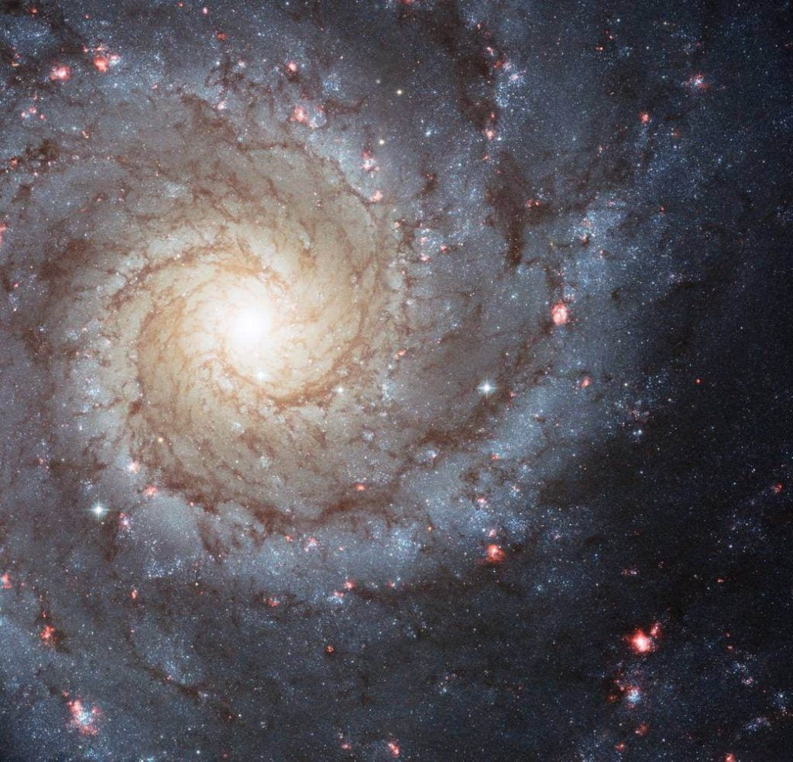
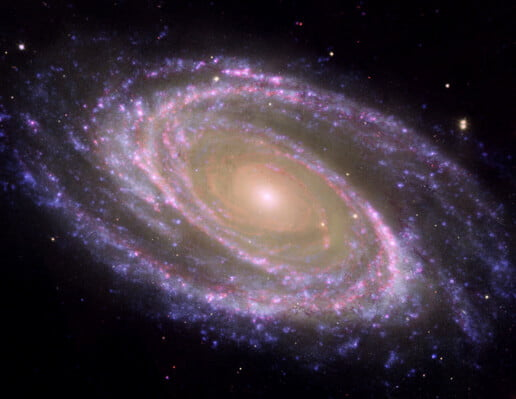
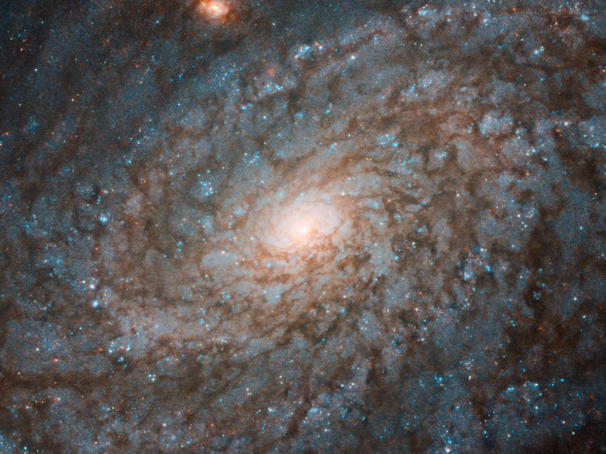
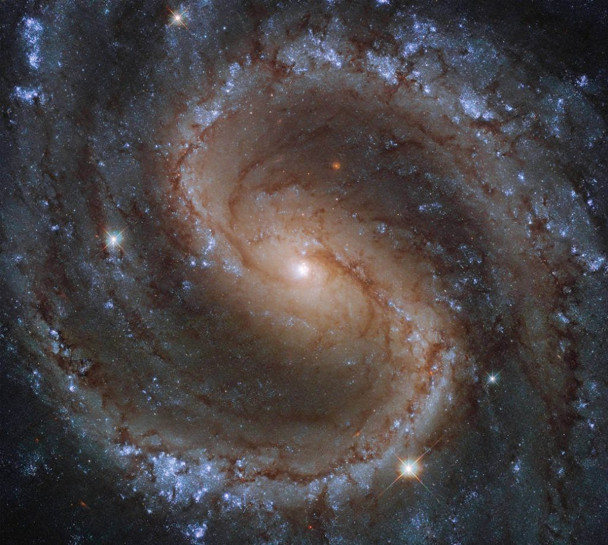
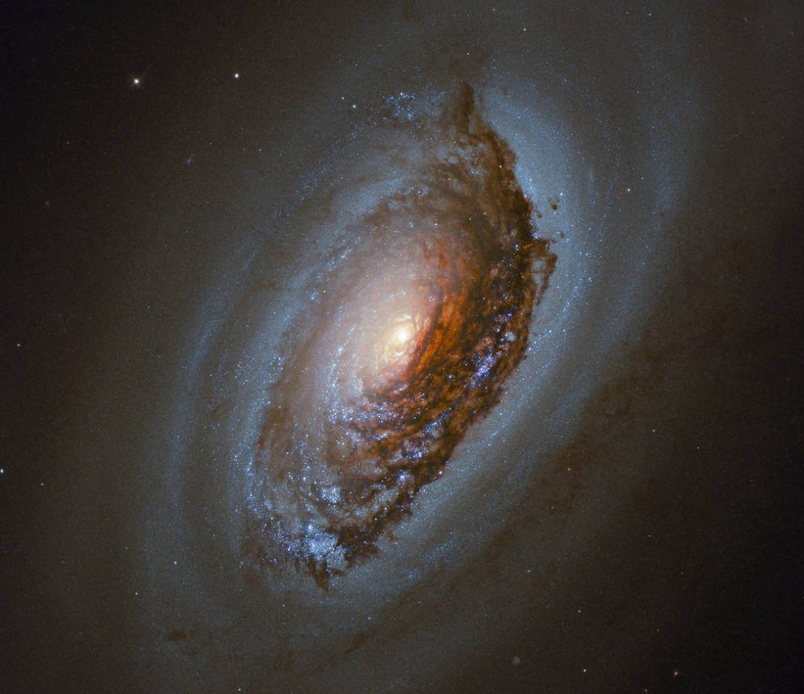
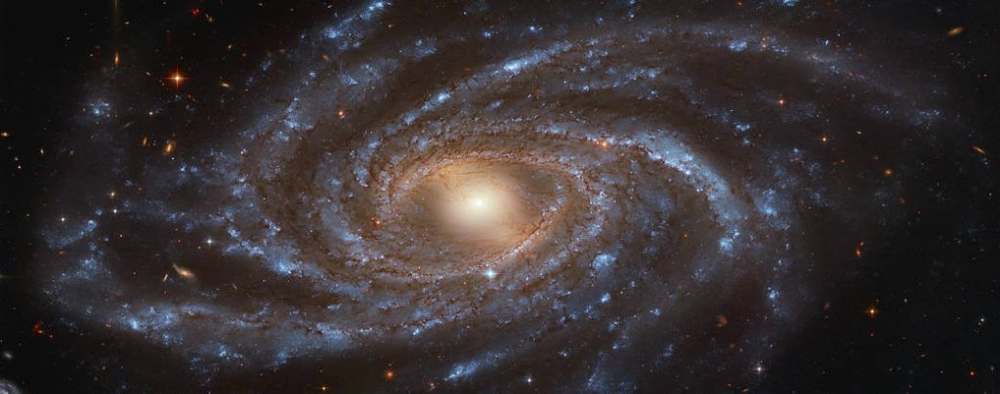
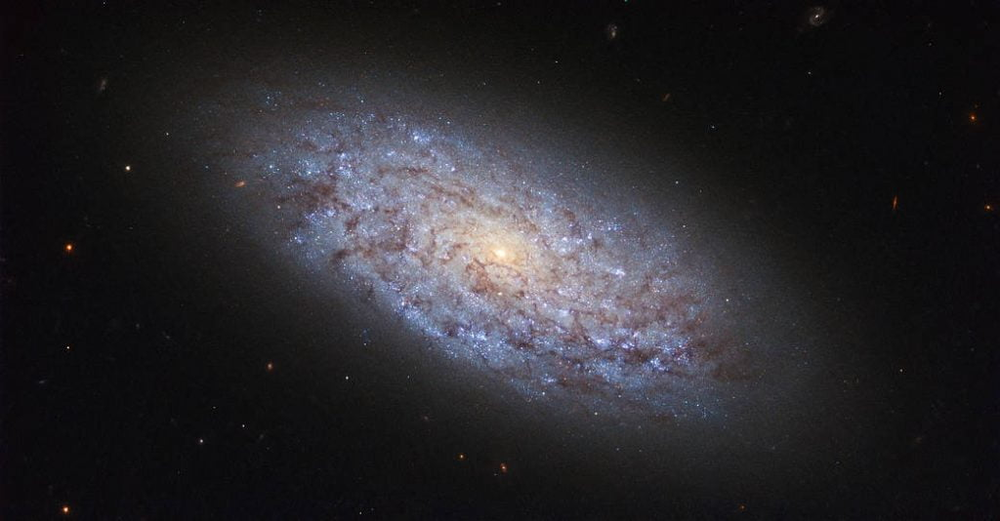
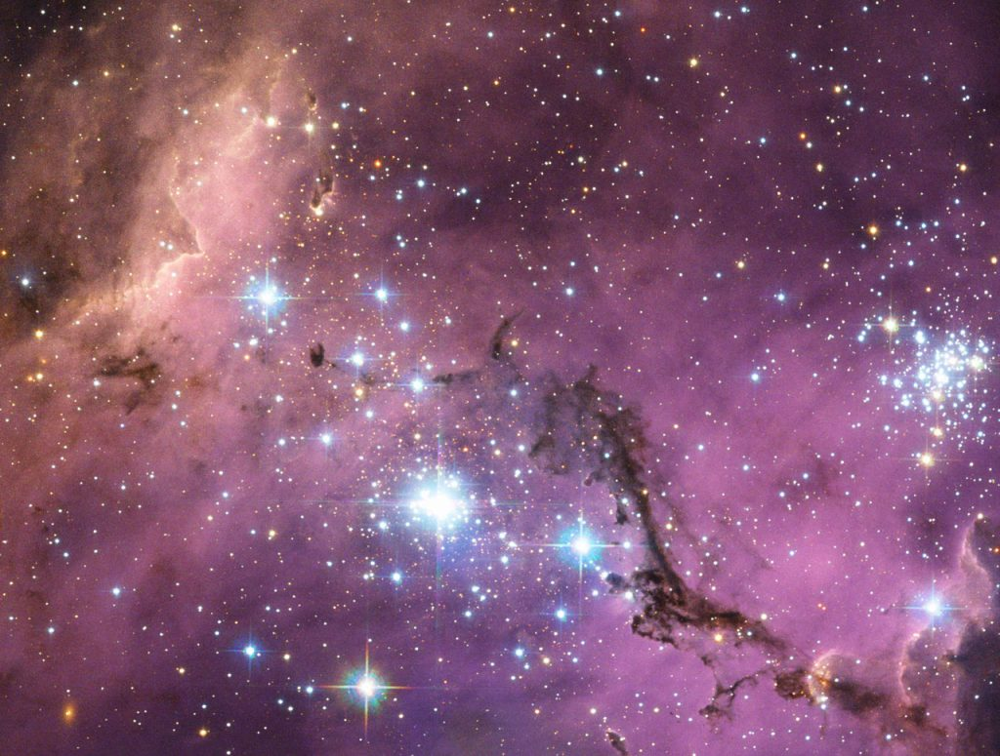
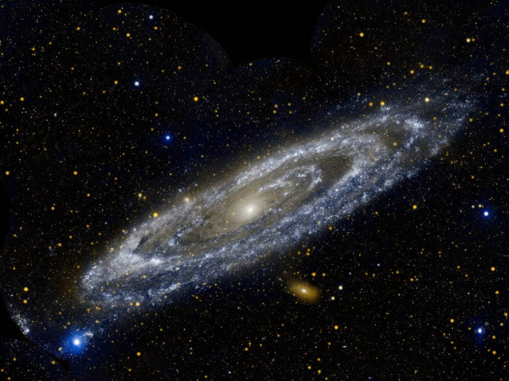

ဂလက်ဆီလို့ ပြောရင် အဓိကကတော့ ကြယ်တွေပါမယ်၊ နောက်ပြီး ဓါတ်ငွေ့တွေ ပါမယ်။ ပြီးတော့ Dark Matter လို့ခေါ်တဲ့ အမှောင်ဒြပ် တွေ ပါပါမယ်။ ဒီ အရာဝတ္ထုတွေ လွတ်မထွက်သွားအောင် အချင်းချင်း ကြားက ဆွဲငင်အားနဲ့ ဆွဲထားတာ ဖြစ်ပါတယ်။

ဂလက်ဆီရဲ့ အစိတ်အပိုင်းတွေဟာ တချိန်လုံး တခုနဲ့ တခု သက်ရောက်မှုတွေ ရှိနေပါတယ်။ ဒီ အချင်းချင်း အပြန်အလှန် သက်ရောက်မှုပေါ် မူတည်ပြီး ဂလက်ဆီ တွေရဲ့ ပုံသဏ္ဍာန်တွေ ဖြစ်လာရတာပါ။ ဂလက်ဆီထဲက အစိတ်အပိုင်းတွေ လွတ်ထွက်မသွားအောင် ဆွဲထားဖို့ လိုတဲ့ ဆွဲငင်အား အများစုကိုတော့ dark matter ခေါ်အမှောင်ဒြပ်ထုက ပေးတာ ဖြစ်ပါတယ်။

ဂလက်ဆီ ဆိုတာက အပေါ်က အရာအားလုံး ပေါင်းစပ်ပြီး ဖြစ်လာတာပဲ ဖြစ်ပါတယ်။
ကျွန်တော်တို့ နေတဲ့ ဂလက်ဆီကို မစ်ကီးဝေး ဂလက်ဆီ(Milky Way Galaxy) လို့ ခေါ်ပါတယ်။ ကျွန်တော်တို့ရဲ့ နေဟာ ဒီ ဂလက်ဆီကြီးထဲက ကြယ်လေး တပွင့်ပဲ ဖြစ်ပါတယ်။ ဒီ မစ်ကီးဝေး ဂလက်ဆီ ကြီးထဲမှာ ကြယ် အလုံးပေါင်း ဘီလီယံ ၁၀၀ ကနေ ၄၀၀ လောက်ထိ ရှိမယ်လို့ ခန့်မှန်းရပါတယ်။ (၁ ဘီလီယံ မှာ သန်း ၁၀၀၀ ရှိပါတယ်)။ လမထွက်ပဲ တိမ်ကင်းစင်တဲ့ ညမျိုးမှာ (မြို့ကြီးတွေက မီးရောင်နဲ့ ဝေးတဲ့ အရပ်မှာ) ကောင်းကင်ကို ကြည့်လိုက်ရင် ဖြူဖွေးနေတဲ့ ကြယ်တန်းရှည်ကြီး အနေနဲ့ မစ်ကီးဝေး ဂလက်ဆီကြီးကို တွေ့ကြရ မှာပါ။ မြန်မာလိုတော့ နဂါးငွေ့တန်းလို့ ခေါ်ပါတယ်။ အနောက်တိုင်းသား တွေကတော့ နို့ရည်နဲ့ တူလို့ဆိုပြီး နို့ရည်ဆမ်းလမ်း (Milky Way) လို့ ခေါ်တာ ဖြစ်ပါတယ်။

အကယ်လို့ ဒီ တွင်းနက်ကြီးက ပတ်ဝန်းကျင်က ဓါတ်ငွေ့တွေနဲ့ ဖုန်မှုန့်တွေကို စုပ်ယူစားသုံးနေမယ် ဆိုရင် ဒီ ဂလက်ဆီရဲ့ ကြယ်အသစ်တွေ ဖြစ်ပေါ်နိုင်စွမ်းကို အများကြီး ထိခိုက်စေနိုင်ပါတယ်။ ကြယ်သစ်တွေ ဖြစ်ပေါ်ဖို့ လိုအပ်တဲ့ ဓါတ်ငွေ့နဲ့ ဖုန်မှုန့်တွေဟာ ကြယ်သစ်တွေ ဖြစ်ခွင့်မရတော့ပဲ တွင်းနက်ကြီးရဲ့ စုပ်ယူ ဝါးမြိုလိုက်ခြင်းကို ခံလိုက်ကြရတာကြောင့်ပါ။

ကျွန်တော်တို့ မစ်ကီးဝေး ဂလက်ဆီ ကြီးရဲ့ ဗဟိုက မဟာ တွင်းနက်ကြီးကတော့ လက်ရှိကာလမှာ ဓါတ်ငွေ့တွေ ဝါးမျိုစားသုံး နေတာမျိုး မရှိသေးပါဘူး။ တနည်းပြောရရင် လောလောဆယ်တော့ အနားယူနေတယ် လို့ ဆိုရမှာပါ။
ဂလက်ဆီတွေဘယ်နှစ်မျိုးရှိလဲဂလက်ဆီတွေဟာ ပုံသဏ္ဍာန် အမျိုးအမျိုး၊ အသွင်းအမျိုးမျိုးနဲ့ ရှိကြပါတယ်။ ဒီအထဲက တွေ့ရများတဲ့ ဂလက်ဆီ အမျိုးအစား လေးတွေကို ဖေါ်ပြပေးပါ့မယ်။
ကျွန်တော်တို့ မစ်ကီးဝေးဟာ ခရုပတ် (Spiral Galaxy) ဂလက်ဆီ ဖြစ်ပါတယ်။ ဒီ ခရုပတ် ဂလက်ဆီ တွေဟာ ဓါတ်ပြားလို ခပ်ပြားပြား ပုံသဏ္ဍာန် ရှိပါတယ်။ နောက်ပြီး ခရုပတ်ပုံ လက်တံတွေလဲ အမြောက်အများ ပါရှိပါတယ်။ ခရုပတ် ဂလက်ဆီ တွေရဲ့ အလယ် ဗဟိုကတော့ အများအားဖြင့် ဘောလုံးလို ဖေါင်းနေ တတ်ကြပါတယ်။
ဒီ ခရုပတ် ဂလက်ဆီ တွေရဲ့ ကြယ်အသစ် ဖြစ်နှုန်းဟာ အများအားဖြင့်တော့ အလယ်အလတ် အဆင့်ပဲ ရှိကြပါတယ်။ အများစုရဲ့ အရွယ်အစားနဲ့ ဒြပ်ထုကလဲ မစ်ကီးဝေး ဂလက်ဆီရဲ့ အရွယ်နဲ့ သိပ်မကွာကြပါဘူး။ ဒီ ခရုပတ် ဂလက်ဆီမှာ ပါတဲ့ ကြယ်တွေ၊ ဂြိုလ်တွေ၊ ဓါတ်ငွေ့တွေ၊ ဖုန်တွေနဲ့ dark matter တွေ အားလုံး စုပေါင်းလိုက်ရင် စုစုပေါင်း ဒြပ်ထုဟာ နေ အစင်း တစ် ထရီလီယံ (1 Trillion) ပမာဏလောက် ရှိပါတယ်။ (၁ ထရီလီယံမှာ ၁၀၀၀ ဘီလီယံ ပါဝင်ပြီး ၁ ဘီလီယံ မှာ သန်း ၁၀၀၀ ပါရှီပါတယ်။)

နောက်ဂလက််ဆီ တမျိုးကတော့ ဧရာမ ဂလက်ဆီလုံး ကြီး (Massive elliptical galaxies) တွေပါ။ သူတို့ရဲ့ ပုံစံကလဲ ကြက်ဥလို လုံးလုံးကြီးတွေ ဖြစ်ကြပါတယ်။ ဒီ ဂလက်ဆီတွေက အများအားဖြင့် သက်တမ်းရင့်တဲ့ ဂလက်ဆီတွေပါ။ သူတို့မှာ ပါဝင်တဲ့ ကြယ်တွေကလဲ ကြယ်အိုကြီးတွေ များပါတယ်။ ဒီဂလက်ဆီတွေမှာ ကြယ်သစ်ဖြစ်ထွန်းမှုလဲ မတွေ့ရတော့ပါဘူး။
ဒီ ဧရာမ ဂလက်ဆီ လုံးကြီးတွေရဲ့ ဒြပ်ထုကလဲ အဆမတန် ကြီးမားကြပါတယ်။ အများအားဖြင့် နေ အစင်းပေါင်း ၁၀၀ ကနေ ၁၀၀၀ ထရီလီယံ လောက်နဲ့ ညီမျှတဲ့ ဒြပ်ထု ရှိတတ်ကြပါတယ်။

ကျွန်တော်တို့နဲ့နီးတဲ့ဂလက်ဆီတွေကဘာတွေလဲ
ကျွန်တော်တို့နဲ့ အနီးဆုံး ဂလက်ဆီလေးကတော့ Sagittarius လို့ အမည်ပေးထားတဲ့ ဂလက်ဆီမွှားလေးပဲ ဖြစ်ပါတယ်။ ဒီဂလက်ဆီမွှား လေးက ကျွန်တော်တို့ရဲ့ မစ်ကီးဝေး ဂလက်ဆီကြီးကို ပတ်နေတာပါ။ ဒီ ဂလက်ဆီမွှားလေးဟာ ကမ္ဘာကနေဆို အလင်းနှစ် ၇၀,၀၀၀ ပဲ ဝေးတာပါ။ဒီ Sagittarius ဟာ မစ်ကီးဝေး ဂလက်ဆီကြီးနဲ့ နီးလွန်းလို့ တဖြည်းဖြည်း မစ်ကီးဝေးနဲ့ ပေါင်းနေပါတယ်။ တနည်းပြောရရင် ဒီ ဂလက်ဆီမွှား လေးဟာ မစ်ကီးဝေး ဂလက်ဆီကြီးရဲ့ ဝါးမြိုခြင်းကို ခံနေရတာ ဖြစ်ပါတယ်။

မစ်ကီးဝေးကို ပတ်နေတာ ဒီ ဂလက်ဆီမွှား နှစ်ခုထဲ မဟုတ်ပါဘူး။ အခြား ဂလက်ဆီမွှားတွေလဲ အများကြီး ရှိပါသေးတယ်။ ဒီအထဲက ထင်ရှုားတဲ့ ဂလက်ဆီမွှား တွေကတော့ မက်ဂျယ်လင် တိမ်တိုက်ကြီး (Large Magellanic Cloud) နဲ့ မက်ဂျယ်လင် တိမ်တိုက်ငယ် (Small Magellanic Cloud) တွေပဲ ဖြစ်ပါတယ်။ ဒီ နှစ်ခုကိုတော့ ကမ္ဘာ့ တောင်ဖက်ခြမ်းကနေပဲ မြင်တွေ့နိုင်ပါတယ်။ မက်ဂျယ်လန် တိမ်တိုက်ကြီးက မစ်ကီးဝေးကနေ အလင်းနှစ် ၁၇၉,၀၀၀ အကွာမှာ ရှိပြီး မက်ဂျယ်လန် တိမ်တိုက်ငယ်ကတော့ အလင်းနှစ် ၂၁၀,၀၀၀ အကွာမှာ ရှိပါတယ်။ ဒီ ဂလက်ဆီမွှား နှစ်ခုကလဲ တနေ့နေ့တော့ မစ်ကီးဝေး ဂလက်ဆီကြီးနဲ့ ပေါင်းစပ်သွားဖို့ ရှိပါတယ်။

ကျွန်တော်တို့ ဂလက်ဆီနဲ့ ဒီ အင်ဒရိုမီဒါ ဂလက်ဆီ ကြီး နှစ်ခုဟာ တဖြည်းဖြည်း တခုနဲ့ တခု နီးလာနေပါတယ်။ ဒီ ဂလက်ဆီ နှစ်ခုဟာ နောက်နှစ်သန်း ၄၅၀၀ လောက်ရှိရင် တစ်ခုထဲ အဖြစ် ပေါင်းစည်းသွားမှာ ဖြစ်ပါတယ်။

ဂလက်ဆီတွေဘယ်လိုဖြစ်လာလဲ
ဂလက်ဆီ အများစုဟာ သက်တမ်းအားဖြင့် နှစ်သန်း ထောင်ချီ ရှိကြပါတယ်။ စကြာဝဠာရဲ့ပထမဆုံး ဂလက်ဆီတွေ ဘယ်တုန်းက စဖြစ်လာလဲ ဆိုတာတော့ ဘယ်သူမှ မသိကြပါဘူး။ ဒါပေမယ့် နက္ခတ်ကြည့် မှန်ပြောင်းတွေနဲ့ လေ့လာချက်အရ စကြာဝဠာရဲ့ အစောပိုင်း ကာလမှာ ဂလက်ဆီ အမွှားလေးတွေပဲ ရှိကြပါတယ်။ မစ်ကီးဝေးလို ဂလက်ဆီ ကြီးတွေဟာ ဂလက်ဆီ သေးသေးလေးတွေ ပေါင်းစပ်ပြီး ဖြစ်လာတယ်လို့ ယူဆရပါတယ်။ကျွန်တော်တို့ မစ်ကီးဝေး ဂလက်ဆီကြီး ဘယ်တုန်းက စဖြစ်တာလဲ ဆိုတာလဲ ဘယ်သူမှ သေချာ မသိကြ သေးပါဘူး။ သုတေသန တွေအရတော့ လွန်ခဲ့တဲ့ နှစ်သန်း ၇၀၀၀ လောက်က ဂလက်ဆီ အသေးလေးတွေ ပေါင်းပြီး မစ်ကီးဝေးရဲ့ တဝက်လောက် ရှိတဲ့ ဂလက်ဆီ တစ်ခုအနေနဲ့ စဖြစ်လာတယ်လို့ ယူဆကြပါတယ်။ ဒီအချိန်လောက်ကမှာ မစ်ကီးဝေးနဲ့ ခပ်ဆင်ဆင် တူတဲ့ ဂလက်ဆီ အဖြစ် ဘဝစလာတာ ဖြစ်ပါတယ်။
ဧရာမ ဂလက်ဆီလုံးကြီးတွေကတော့ မစ်ကီးဝေးလို ခရုပတ် ဂလက်ဆီတွေ အမြောက်အများ ပေါင်းစုပြီး ဖြစ်လာကြတာပါ။ ဒီ ဂလက်ဆီတွေကို အများအားဖြင့် ဂလက်ဆီတွေ ပြွတ်သိပ် နေတဲ့ အရပ်တွေမှာ တွေ့ရလေ့ ရှိပါတယ်။ ဒီအရပ်မှာ ဂလက်ဆီတွေဟာ တစ်ခုနဲ့ တစ်ခု ကနေကြတော့ အချင်းချင်း ပေါင်းကုန်ကြတာပါ။
ဂလက်ဆီဘယ်နှစ်ခုရှိလဲ
စကြာဝဠာထဲမှာ စုစုပေါင်း ဂလက်ဆီ ဘယ်နှစ်ခု ရှိလဲ ဆိုတာကိုလဲ ဘယ်သူမှတော့ သေချာ မသိကြပါဘူး။ ခန့်မှန်းချက်တွေ အရတော့ “ဘီလီယံ ရာပေါင်းများစွာ” ရှိမယ်လို့ပဲ ပြောနိုင်ပါသေးတယ်။နက္ခတ်ပညာရှင်တွေဟာ ဂလက်ဆီတွေ ဘယ်နှစ်ခုရှိလဲ ရေတွက်ဖို့ ကောင်းကင်ရဲ့ သေးငယ်တဲ့ အစိတ်အပိုင်းလေး တစ်ခုကို မှန်ပြောင်းကြီးနဲ့ ချိန်ပြီး အကြာကြီး ဓါတ်ပုံရိုက်ယူ ရပါတယ်။ ပြီးရင် အဲ့သည် အကွက်လေးမှာ ရှိတဲ့ ဂယ်လက်ဆီ အရေအတွက်ကို ကြည့်ပြီး ကောင်းကင် တစ်ခုလုံးဆို ဂလက်ဆီ ဘယ်လောက် ရှိမလဲ ဆိုပြီး မှန်းဆကြတာပါ။ ဒီနည်းက သိပ်တော့ တိကျလှတာ မဟုတ်ပါဘူး။ ပြောလို့ရတာကတော့ အခု အားအကောင်းဆုံး ဆိုတဲ့ မှန်ပြောင်းတွေနဲ့ မြင်ရတဲ့ အရေအတွက်ထက်တော့ ပိုများမှာ အသေအခြာပဲ ဖြစ်ပါတယ်။
Reference: What is a Galaxy? | Live Science